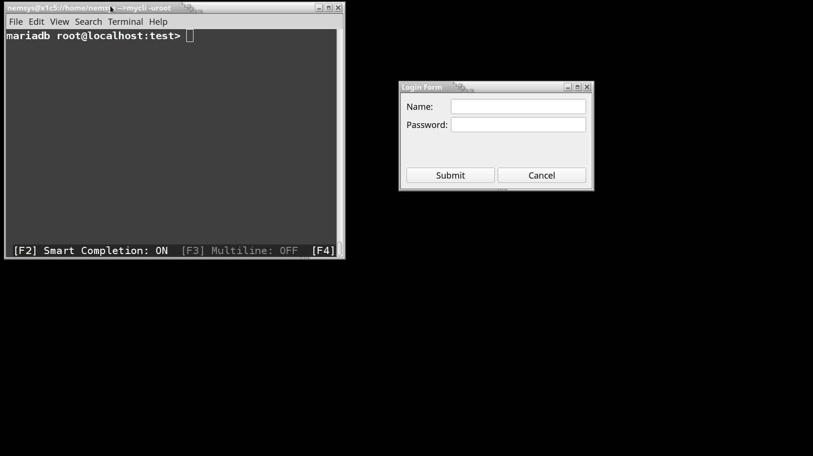

Keyboard shortcuts:
N/СпейсNext Slide
PPrevious Slide
OSlides Overview
ctrl+left clickZoom Element
If you want print version => add '
?print-pdf' at the end of slides URL (remove '#' fragment) and then print.
Like: https://wwwcourses.github.io/...CourseIntro.html?print-pdf
Created for

Iva E. Popova, 2022-2023,

Using MySQL With PyQt6 - Overview
Using MySQL With PyQt6 - Overview
Overview
- When integrating a Qt application with a MySQL database, there are two main approaches:
- 1. Python's DB-API compliant modules: This approach works universally with any Python application. Examples include MySQL Connector, `sqlite3`, and `psycopg2` for PostgreSQL. These libraries allow you to use standard Python code to connect, execute queries, and fetch results from a database, making it suitable for both standalone Python apps and PyQt-based GUIs.
- 2. Qt's SQL Module (`QtSql`): Qt provides built-in SQL support through its `QtSql` module, offering a set of classes to integrate SQL databases (like MySQL) directly into a Qt application. This approach leverages Qt's Model-View architecture, which allows for the seamless display of database records in various UI components such as tables and list views. This will be discussed in detail in later lectures.
- In the following examples, we will focus on using Python's MySQL Connector for database interactions. Later in the course, we will explore Qt's approach, which is ideal for more complex and integrated use cases where the database needs to interact closely with the UI components.
Handling SQL Databases With Python Drivers
Hand on: Using MySQL With PyQt6 Widgets
Create users table
DROP TABLE IF EXISTS `users`;
/*!40101 SET @saved_cs_client = @@character_set_client */;
/*!40101 SET character_set_client = utf8 */;
CREATE TABLE `users` (
`id` int(11) NOT NULL AUTO_INCREMENT COMMENT 'primary key',
`username` varchar(50) NOT NULL,
`email` varchar(20) NOT NULL,
`password` varchar(45) NOT NULL,
PRIMARY KEY (`id`),
UNIQUE KEY `email` (`email`)
) ENGINE=InnoDB AUTO_INCREMENT=4 DEFAULT CHARSET=utf8;
/*!40101 SET character_set_client = @saved_cs_client */;
Insert some data
INSERT INTO `users` VALUES
(1,'Maria','maria@gmail.com','maria123'),
(2,'Pesho','peho@gmail.com','pesho123'),
(3,'Ivan','ivan@gmail.com','ivan123');
Registration Form demo
import mysql.connector
class DB:
def __init__(self, user, password, db_name, host="localhost", port=3306):
try:
self.cnx = mysql.connector.connect(
user=user, password=password, db=db_name, host=host, port=port
)
except mysql.connector.Error as e:
print(f'Database Error: {e}')
print("*** Connection Established ***")
def authenticate(self, user_name, password):
# Create a cursor for the connection
with self.cnx.cursor() as cursor:
# Prepare SQL query with placeholders to prevent SQL injection
q = """
SELECT * FROM users
WHERE username = %s
AND password = %s
"""
# Execute the query with provided parameters
cursor.execute(q, (user_name, password))
# We are only interested if 1 or 0 rows are returned
if cursor.fetchone():
return True # Authentication successful
return False # Authentication failed
if __name__ == "__main__":
db = DB('test', 'test1234','pyqt_users_db')
is_authenticated = db.authenticate(user_name='Maria', password='maria123')
if is_authenticated:
print('Authentication successful!')
else:
print('Authentication failed!')
References
Handling SQL Databases With PyQt Drivers
Handling SQL Databases With PyQt Drivers
Connecting PyQt to an SQL Database
# create connection to DB
QSqlDatabase.addDatabase(
driver, connectionName=QSqlDatabase.defaultConnection
)
- driver - required argument that holds a string containing the name of a PyQt-supported SQL driver
- Note, that you may need to compile Qt with the specific driver, except for built-in SQLite.
- connectionName - an optional argument that holds a string with the name of the connection
- Once you’ve created a connection, you might need to set several attributes on it. The specific set of attributes will depend on the driver you’re using. In general, you’ll need to set attributes such as the database name, the username, and the password for accessing the database
| Method | Description |
|---|---|
.setDatabaseName(name) |
Sets the database name to name, which is a string representing a valid database name |
.setHostName(host) |
Sets the hostname to host, which is a string representing a valid hostname |
.setUserName(username) |
Sets the username to username, which is a string representing a valid user name |
.setPassword(password) |
Sets the password to password, which is a string representing a valid password |
Executing Dynamic Queries with Placeholder Parameters
- PyQt supports two parameter placeholder styles:
- Oracle style uses named placeholders such as :name or :address.
- ODBC style uses a question mark (?) as a positional placeholder.
- To create this kind of dynamic query in PyQt, you first create a template with a placeholder for each query parameter and then pass that template as an argument to
.prepare(), which parses, compiles, and prepares the query template for execution - If the preparation process succeeds, then
prepare()returns True. After that, you can pass a specific value to each parameter using.bindValue()with named or positional parameters or using.addBindValue()with positional parameters. - .bindValue() has the following two variations:
.bindValue(placeholder, val).bindValue(pos, val)
Registration Form demo
from PyQt6.QtSql import QSqlDatabase, QSqlQuery
class DB:
def __init__(self, user, password, db_name, host="localhost", port=3306):
# Specify MySQL as the database type
db = QSqlDatabase.addDatabase('QMYSQL')
db.setHostName(host)
db.setDatabaseName(db_name)
db.setUserName(user)
db.setPassword(password)
if db.open():
print("*** Connection Established ***")
else:
print(f"Database Error: {db.lastError().text()}")
def authenticate(self, user_name, password):
query = QSqlQuery()
# Prepare SQL query with placeholders to prevent SQL injection
query.prepare("""
SELECT * FROM users
WHERE username = :username
AND password = :password
""")
# bind with provided parameters
query.bindValue(":username", user_name)
query.bindValue(":password", password)
if query.exec():
if query.next(): # If at least one row is returned
return True # Authentication successful
return False # Authentication failed
if __name__=="__main__":
db = DB('test', 'test1234','pyqt_users_db')
is_authenticated = db.authenticate(user_name='Maria', password='maria123')
if is_authenticated:
print('Authentication successful!')
else:
print('Authentication failed!')
Exercises
Exercises
Login Form Task
- Create a simple Login Form which functions as shown in GIF bellow: 
- TIP: use QMessageBox.information() and QMessageBox.critical() dialog widgets.
{kind=link}
QMessageBox in PyQt6
QMessageBox in PyQt6
QMessageBox Overview
- QMessageBox is a modal dialog that displays a message to the user, allowing them to acknowledge or respond to the message. It's commonly used for alerts, confirmations, and notifications in PyQt applications.
- QMessageBox allows customization of the message text, title, icon type (e.g., information, warning), and button types.
- PyQt provides constructors for next predefined types: Question, Information, Warning, Critical
- Reference: https://doc.qt.io/qt-6/qmessagebox.html#static-public-members
from PyQt6 import QtWidgets as qtw
msg_box = qtw.QMessageBox()
msg_box.setWindowTitle("Information")
msg_box.setIcon(qtw.QMessageBox.Icon.Warning) # Set the icon to Warning
msg_box.setText("Are you sure you want to continue?")
msg_box.setStandardButtons(qtw.QMessageBox.StandardButton.Ok | qtw.QMessageBox.StandardButton.No)
msg_box.show()
QMessageBox.question
- Asks the user a question, typically requiring a Yes/No response.
# Example usage:
reply = qtw.QMessageBox.question(
self,
"Question", # Title
"Do you want to continue?", # Message text
qtw.QMessageBox.StandardButton.Yes | qtw.QMessageBox.StandardButton.No, # Buttons
defaultButton=qtw.QMessageBox.StandardButton.No # Optional default button
)
if reply == qtw.QMessageBox.StandardButton.Yes:
print("User chose to continue.")
else:
print("User chose not to continue.")
QMessageBox.information
- Displays informational messages that do not require action.
# Example usage:
QMessageBox.information(self, "Information", "This is an info message.", QMessageBox.StandardButton.Ok)
QMessageBox.warning
- Displays a warning message to inform the user about potential issues.
# Example usage:
QMessageBox.warning(self, "Warning", "This action may have consequences.", QMessageBox.StandardButton.Ok)
QMessageBox.critical
- Displays a critical error message to alert the user of severe issues.
# Example usage:
QMessageBox.critical(self, "Critical Error", "An error occurred.", QMessageBox.StandardButton.Ok)
Example
import sys
from PyQt6 import QtWidgets as qtw
from PyQt6 import QtCore as qtc
from PyQt6 import QtGui as qtg
class MainWindow(qtw.QWidget):
def __init__(self , *args, **kwargs):
super().__init__(*args, **kwargs)
# create widgets:
btnShowCommonMessageBox = qtw.QPushButton('ShowCommonMessageBox')
btnShowQuestionMessageBox = qtw.QPushButton('ShowQuestionMessageBox')
btnShowInformationMessageBox = qtw.QPushButton('ShowInformationMessageBox')
btnShowWarningMessageBox = qtw.QPushButton('ShowWarningMessageBox')
btnShowCriticalMessageBox = qtw.QPushButton('ShowCriticalMessageBox')
# main layout
main_layout = qtw.QGridLayout(self)
main_layout.addWidget(btnShowCommonMessageBox, 0, 0, 1, 2)
main_layout.addWidget(btnShowQuestionMessageBox, 1, 0)
main_layout.addWidget(btnShowInformationMessageBox, 1, 1)
main_layout.addWidget(btnShowWarningMessageBox, 2, 0)
main_layout.addWidget(btnShowCriticalMessageBox, 2, 1)
btnShowCommonMessageBox.clicked.connect(self.showCommonMessageBox)
btnShowQuestionMessageBox.clicked.connect(self.showQuestionMessageBox)
btnShowInformationMessageBox.clicked.connect(self.showInformationMessageBox)
btnShowWarningMessageBox.clicked.connect(self.showWarningMessageBox)
btnShowCriticalMessageBox.clicked.connect(self.showCriticalMessageBox)
self.setWindowTitle('Message Box Demos')
self.show()
# Create a QMessageBox instance
def showCommonMessageBox(self):
msg_box = qtw.QMessageBox(self)
msg_box.setWindowTitle("Common")
msg_box.setIcon(qtw.QMessageBox.Icon.Warning) # Set the icon to Warning
msg_box.setText("Are you sure you want to continue?")
msg_box.setStandardButtons(qtw.QMessageBox.StandardButton.Ok | qtw.QMessageBox.StandardButton.No)
msg_box.show()
def showQuestionMessageBox(self):
reply = qtw.QMessageBox.question(
self,
"Question", # Title
"Do you want to continue?", # Message text
qtw.QMessageBox.StandardButton.Yes | qtw.QMessageBox.StandardButton.No, # Buttons
defaultButton=qtw.QMessageBox.StandardButton.No # Optional default button
)
if reply == qtw.QMessageBox.StandardButton.Yes:
print("User chose to continue.")
else:
print("User chose not to continue.")
def showInformationMessageBox(self):
qtw.QMessageBox.information(
self,
"Information",
"This is an info message.",
qtw.QMessageBox.StandardButton.Ok
)
def showWarningMessageBox(self):
qtw.QMessageBox.warning(
self,
"Warning",
"This is a warning message.",
qtw.QMessageBox.StandardButton.Ok
)
def showCriticalMessageBox(self):
qtw.QMessageBox.critical(
self,
"Critical",
"This is a critical message.",
qtw.QMessageBox.StandardButton.Ok
)
if __name__ == '__main__':
app = qtw.QApplication(sys.argv);
window = MainWindow()
sys.exit(app.exec())